海外之地
01游戏背景
《海外之地》是一款 2–4 人的大战略游戏，主题是第一次十字军东征结束之后黎凡特（Levant）发生的一切——那是四大十字军国家争相扩张势力、与撒拉逊人交战、又彼此倾轧的年代。
作为这些十字军国家的领袖，你必须积累财富、发展城市、引导主教、率领忠心的骑士走上战场……但别忘了：在黎凡特的烈日下活下去本身就是苦差事，而且回合越往后，日子越难过。
你要正面与撒拉逊人交锋，还是派间谍渗透敌国？你要争取教皇的支持，还是背刺你的信仰兄弟？通往胜利的路有很多条，但只有一个十字军国家会被认定配得上统治这片应许之地。
历史背景
公元 1099 年 7 月 15 日。经过漫长围城，十字军攻下耶路撒冷。第一次东征的主要目标达成：基督教的圣物从穆斯林手中夺回。在此之前，十字军已对黎凡特发动全面入侵——这片土地南北纵贯今天的土耳其到埃及，西临地中海，东至约旦与今日伊拉克的边界。目标高尚而“神圣”，可参与远征的人，多半被占有的欲望驱动。
有些十字军是为了躲避欧洲令人窒息的税负与不公的法律；更多人是一无土地的骑士，宣誓效忠是盼着新主君分封土地；还有些人是被 1095 年教皇乌尔班二世在克莱蒙大教堂的那场演说带来的——他们斗篷上缝着的十字，因信仰而灼灼发亮。第一次东征的领袖有塔兰托的博希蒙德、布永的戈弗雷与鲍德温、图卢兹的雷蒙等等：他们很快意识到，耶路撒冷一旦拿下，想活下去就有无穷的事要做、有无穷的秩序要维持。于是四个十字军国家相继建立：埃德萨伯国（1098）、安条克亲王国（1098）、耶路撒冷王国（1099），以及稍晚的的黎波里伯国（1109）。
新生的国家开始分封土地、爵位与其他恩惠，耶路撒冷与圣物归位的消息也传遍基督教世界。更多人涌向黎凡特定居——正好补上三年征战中被耗干的十字军兵源。梵蒂冈自东征结束起就紧盯黎凡特：教皇向拉丁宫廷派出新的使节与主教，让他们强化圣座的影響、并在往后岁月里领导安条克等新领地的牧首区。罗马的主教们为了扩张羊群不择手段：有时甚至拆散了当地基督徒与其他信仰之间经营多年的联系。
每个新国家都需要一笔不小的钱才能撑住——所以十字军力图垄断中东贸易、掌控一切货物的流动。
他们在军事与经济上的胜利，意味着许多人的失败。“撒拉逊人”是对塞尔柱人与当地众多阿拉伯部落的统称，他们被第一次东征夺去了土地与影响力，并寻求报复。撒拉逊人的袭击极为顽强：有些突袭直接俘获了拉丁领袖，比如鲍德温一世与塔兰托的博希蒙德，以及埃德萨伯爵、后来的耶路撒冷国王鲍德温二世。由于这些袭击与不时出现的长期围城，中东拉丁国家的封臣全年都要服役——与惯常的每年 40 天形成鲜明对比。对他们而言这是生死问题；从很多方面说，也正是这些境况决定了黎凡特拉丁国家的动荡命运。
十字军东征以及其间的岁月，是一个充满阴谋、背叛、破坏、教会与邻国干预的时代……足够撑起一部长篇电视剧——或者，在我们这里，是这款桌游。《海外之地》想让你亲历 12 世纪初的那些事件：第一次与第二次十字军东征之间的空档，中东十字军国家的黄金时代。
我们在设计《海外之地》时力求忠于史实与史料——当然，也不回避艺术化的诠释。如有与今日雷同之处，多半并非巧合。
关于插画
《海外之地》的全部原画由我们的画师 Yaroslavna Serebryakova 手绘。她用铅笔、钢笔与墨水为每一个配件作画，再以金箔装饰，成品扫描并修版后使用。游戏主板背面印的，就是她主板原画的扫描件。
02配件
| 类别 | 数量 | 说明 |
|---|---|---|
| 主板 | 1 块 | 背面（无彩色装饰面）不可用于游戏 |
| 战场板 | 1 块 | 战斗时置于双方之间 |
| 国家板 | 4 块 | 耶路撒冷／的黎波里／埃德萨／安条克 |
| 战斗标记 | 1 枚 | 双面 |
| 纹章标记 | 28 枚 | 双面，背面为限制标记 |
| 撒拉逊突袭标记 | 8 枚 | 暗置在撒拉逊轨道上 |
| 钱币 | 45 枚 | 面值 1 与 3 |
| 单位标记 | 64 枚 | 每色 16 枚 |
| 命令标记 | 16 枚 | 双面，每色 4 枚 |
| 影响分标记 | 60 枚 | 面值 1／3／5／9 |
| 城墙标记 | 13 枚 | 双面，数值即城市等级 |
| 自动机标记 | 10 枚 | 2–3 人局使用 |
| 资源标记 | 42 枚 | 双面（正面彩色＝可用，背面灰＝已花） |
| 撒拉逊单位 | 25 枚 | 驻守撒拉逊城市 |
| 主教标记 | 40 枚 | 每色 10 枚，等级 I／II |
| 事件卡 | 12 张 | 每局只用 6 张 |
| 城市计数器 | 13 个 | 三片式＋塑料铆钉，需组装 |
| 敕令卡 | 32 张 | I 级／II 级 |
| 撒拉逊卡 | 20 张 | 代撒拉逊人打战术用 |
| 战术卡 | 58 张 | 按等级分叠 |
| 总督卡 | 20 张 | 含起始总督 |
| 霍姆斯效果卡 | 1 张 | 占领霍姆斯时取用 |
| 速查卡 | 4 张 | 双面 |
| 教皇诏书卡 | 16 张 | 秘密目标 |
| 间谍卡 | 16 张 | 放强化命令时抽 |
| 建筑卡 | 26 张 | 等级 0–IV |
| 称号卡 | 20 张 | 战役模式使用 |
组装城市计数器
首次游戏前，先把 13 个三片式城市计数器组装好。每个计数器由三片组成，用一枚塑料铆钉固定。按图示打出配件并装好，确认顶片能转动，并检查中片上的城市名与底片（大片）背面的城市名一致。
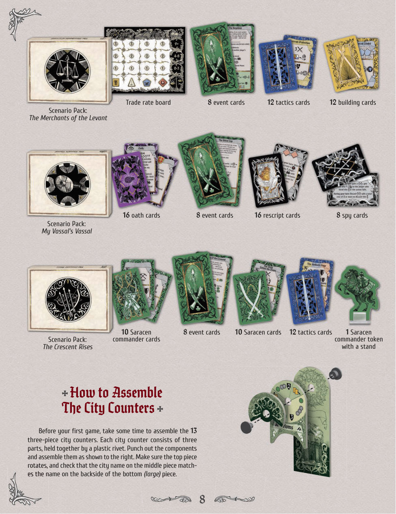
03设置
以下按 4 人局说明。2–3 人局的追加步骤写在白框里，遇到白框就要照做。
3.0 桌面与国家的选定
- 把主板放在桌面中央，彩色面朝上。主板背面（没有彩色装饰的那一面）不能用来游戏。
- 所有玩家共同商定各自代表的十字军国家：耶路撒冷、的黎波里、埃德萨或安条克。拿取自己选定国家的国家板，放在面前；未使用的国家板移出游戏。但未使用国家的纹章标记仍留在游戏中，当作限制标记使用——把它们翻到印有限制符号的一面，先放在主板旁边备用。
接下来按下面的顺序设置主板上的各个区域。
3.1 事件区
- 洗混全部事件卡，不看内容随机抽 6 张，面朝下叠放在事件卡槽里，构成事件牌堆。其余事件卡全部移出游戏。
- 把全部撒拉逊突袭标记面朝下洗混，在事件牌堆旁撒拉逊轨道的每个空位上各放 1 枚（面朝下）。余下的 3 枚不看内容直接移出游戏。
- 洗混全部撒拉逊卡构成撒拉逊牌堆，面朝下放在事件卡下方的卡槽里。
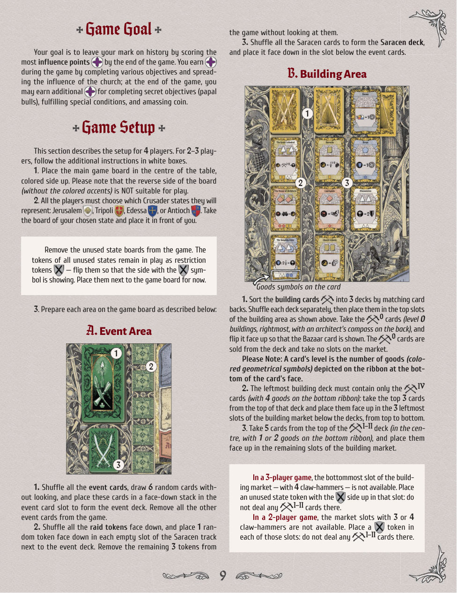
3.2 建筑区
- 按牌背把建筑卡分成 3 叠，各自洗混，然后按图示放进建筑区上方的卡槽里。取出等级 0 的建筑卡（最右侧那一叠，牌背是建筑师的圆规），把它翻到正面，露出巴扎卡。等级 0 的卡直接从牌堆上买，不占市场上的位置。
- 最左边那一叠只能放 IV 级卡（卡面下方缎带上印 4 个资源）。从这叠顶上取 3 张，正面朝上放进牌堆下方建筑市场最左侧的 3 个位置，自上而下排列。
- 从中间那叠 I–II 级卡（缎带上印 1 或 2 个资源）顶上取 5 张，正面朝上填满建筑市场剩下的位置。
3.3 战术区
- 把战术卡分叠：
- 缎带下方印有国家纹章的 20 张是等级 0 的卡，先放在一边（第 3.8 节会发给玩家）。
- 取出全部 IV 级卡（缎带上 4 个资源），洗混构成 IV 牌堆，面朝下放进印有单把白剑的卡槽。然后从这叠顶上取 3 张，正面朝上放进战术市场最右侧的 3 个位置，自上而下排列。
- 此时剩下的只有 I–II 级卡（1 或 2 个资源）。洗混构成 I–II 牌堆，面朝下放进上方中央、印单把黑剑的卡槽。然后取 5 张，正面朝上填满战术市场剩下的位置。
3.4 间谍区与总督区
- 洗混全部间谍卡构成间谍牌堆，面朝下放进黎凡特地图旁印有黑色小瓶的卡槽。
- 如果是你的第一局：把起始总督卡（上方缎带印有各国纹章的那几张）挑出来，先放在一边。把剩下的总督卡洗混构成总督牌堆，面朝下放进印有单支长矛的卡槽。然后取 5 张，正面朝上放进总督市场的 5 个位置。
如果你已经玩过：把全部总督卡一起洗混构成总督牌堆，其余步骤相同。
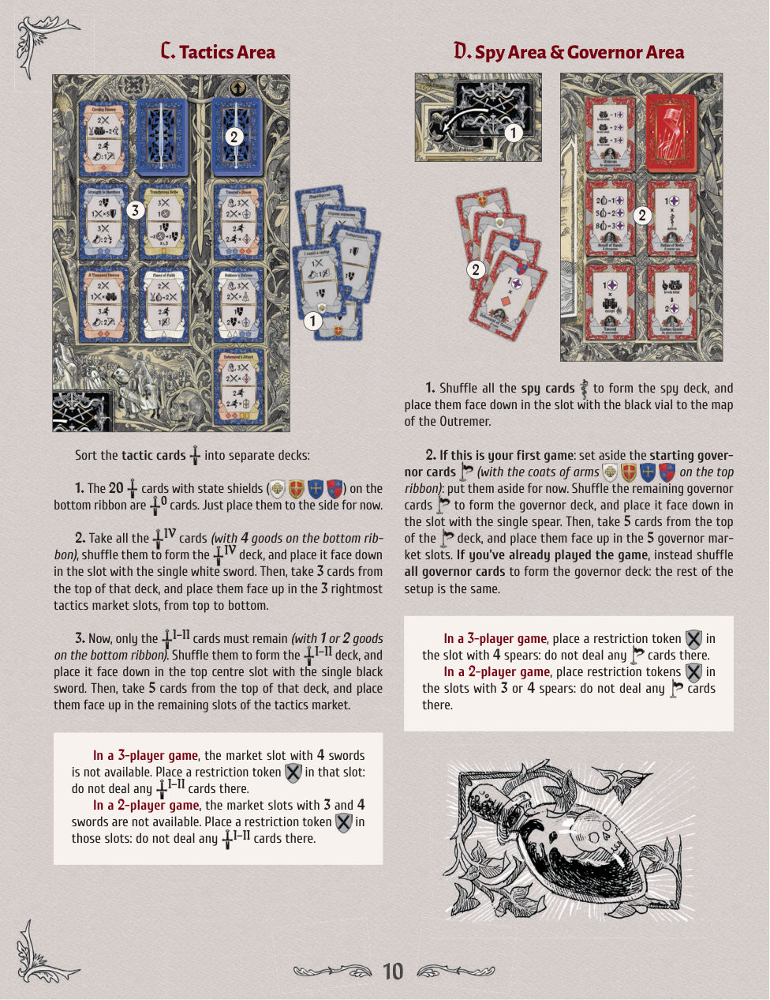
3.5 圣徒区
- 从本局参战的每个国家各取 1 枚木制盾形标记，放进圣徒轨上与
该国纹章对应的格子里——这些就是各自的圣徒标记。 - 按等级把敕令卡分成 2 叠：I 级敕令牌背是渡鸦，II 级敕令牌背是鸽子。各自洗混，面朝下放在圣徒轨上方——I 级堆放在轨道左边，II 级堆放在轨道右边。
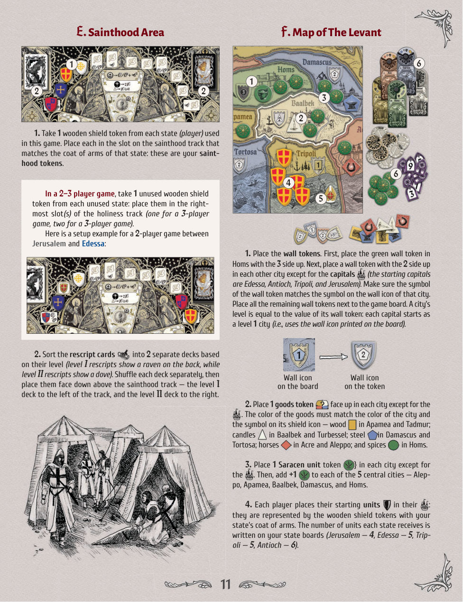
3.6 黎凡特地图
- 放城墙标记。先把绿色城墙标记放进霍姆斯，数字 3 那面朝上。然后在其他每座城市（首都除外——起始首都是埃德萨、安条克、的黎波里、耶路撒冷）各放 1 枚城墙标记，数字 2 那面朝上。注意城墙标记上的符号必须与该城墙上印的城墙图标相符。余下的城墙标记放在主板旁边。
一座城市的等级＝其城墙标记的数值。因此每座首都一开始都是 1 级城（直接用主板上印的城墙图标，不放标记）。 - 在除首都之外的每座城市放 1 枚资源标记，正面朝上。资源的颜色必须与该城的颜色、以及其盾形图标上的符号一致：
资源 城市 木材 阿帕梅亚、塔德穆尔 蜡烛 巴勒贝克、图贝塞尔 钢铁 大马士革、托尔托萨 马匹 阿卡、阿勒颇 香料 霍姆斯 - 在除首都之外的每座城市放 1 枚撒拉逊单位标记。然后给5 座中央城市——阿勒颇、阿帕梅亚、巴勒贝克、大马士革、霍姆斯——各再加 1 枚。
- 每位玩家把自己的起始单位放进自己的首都：用印有本国纹章的木制盾形标记表示。各国起始单位数印在自己的国家板上——耶路撒冷 4、埃德萨 5、的黎波里 5、安条克 6。
- 每位玩家拿 1 枚I 级主教标记（标记的等级＝正面印的数值），面朝下放进自己的首都，露出纹章。
- 把钱币标记、影响分标记、全部剩余资源、全部剩余撒拉逊军队，以及三片式城市计数器放到主板旁边伸手可及处，构成公共供应堆。把每个城市计数器的顶片转到颜色较亮的扇区——那就是该城的起始等级。
设置自动机：只取 5 枚自动机标记（每种各 1 枚，外加 1 枚强化命令标记），放在主板旁伸手可及处。
设置自动机：取全部 10 枚自动机标记，放在主板旁伸手可及处。
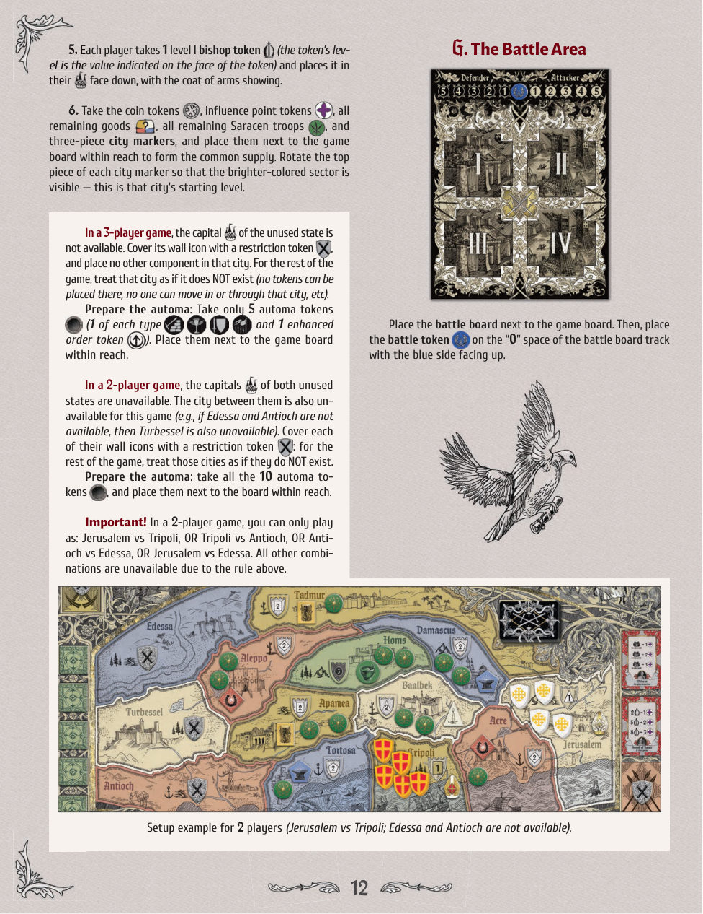
3.7 战场
把战场板放在主板旁边。然后把战斗标记放在战场板轨道“0” 格上，蓝色面朝上。
3.8 玩家区
- 把每位玩家选定的国家板放在自己面前：耶路撒冷、的黎波里、埃德萨或安条克。
- 发给每位玩家起始钱币，放在国家板的储藏区。数额印在自己的国家板上。注意：取用或支付时看的是钱币的面值，不是钱币的枚数。
- 把印有本国纹章的全部剩余单位标记与主教标记发给该玩家，放在国家板旁构成个人供应堆。主教标记必须始终面朝下，数值保密：除另有说明，只有标记的所有者可以查看。
- 发给每位玩家 4 枚本国颜色的命令标记（耶路撒冷白、的黎波里黄、埃德萨蓝、安条克红）。
- 从先前挑出的战术卡中，把印有本国纹章的 5 张起始战术卡发给每位玩家，正面朝上放在国家板旁。
- 把首都的三片式城市计数器发给每位玩家，放进国家板上第一个城市格（印着首都名称的那格）。
- 给每位玩家随机发 1 张教皇诏书卡，面朝下放在国家板旁，对其他玩家保密。发完后余下的诏书卡移出游戏。
老手变体：每位玩家改为随机抽 2 张诏书卡，留 1 张，另 1 张移出游戏。 - 从公共供应堆给每位玩家 1 枚与首都颜色相符的资源标记，正面朝上放在国家板的储藏区。每枚资源标记有两面：背面（灰化）表示该资源当前已被花掉。
- 如果是你的第一局：每位玩家领取印有本国纹章的起始总督卡，按图示插进首都三片式计数器的中片与底片之间。
如果你已经玩过：每位玩家改为抽 2 张总督卡，留 1 张，另 1 张正面朝上放回总督牌堆底部；忽略起始总督卡上的纹章。
关于各位总督的简要历史传记，见《剧本规则》第 20–23 页。 - 发给每位玩家 1 张双面速查卡。
- 发给每位玩家 4 枚本国颜色的盾形标记，以及每位对手颜色各 1 枚盾形标记。这些标记也可以当限制标记用。
所有没用到的配件全部移出游戏。
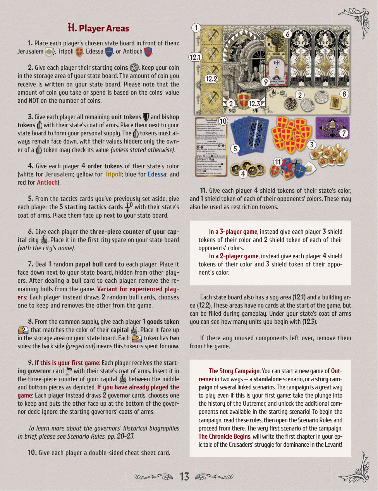
04游戏目标与回合结构
你的目标是在历史上留下自己的印记——游戏结束时影响分最高的玩家获胜。影响分在游戏中靠完成各种目标、扩张教会的影响力获得；游戏结束时，还能靠完成秘密目标（教皇诏书）、达成特殊条件以及囤积钱币获得追加分。
一局由若干轮构成
每一轮分为 4 个阶段，按顺序执行：
| 阶段 | 做什么 |
|---|---|
| ① 事件阶段 | 翻开事件卡，撒拉逊人获得增援并劫掠被夺走的城市 |
| ② 计划阶段 | 在命令十字上放置命令标记，安排本轮与下一轮的行动 |
| ③ 命令阶段 | 结算命令十字内格上的所有命令 |
| ④ 收入阶段 | 收取钱币与影响分 |
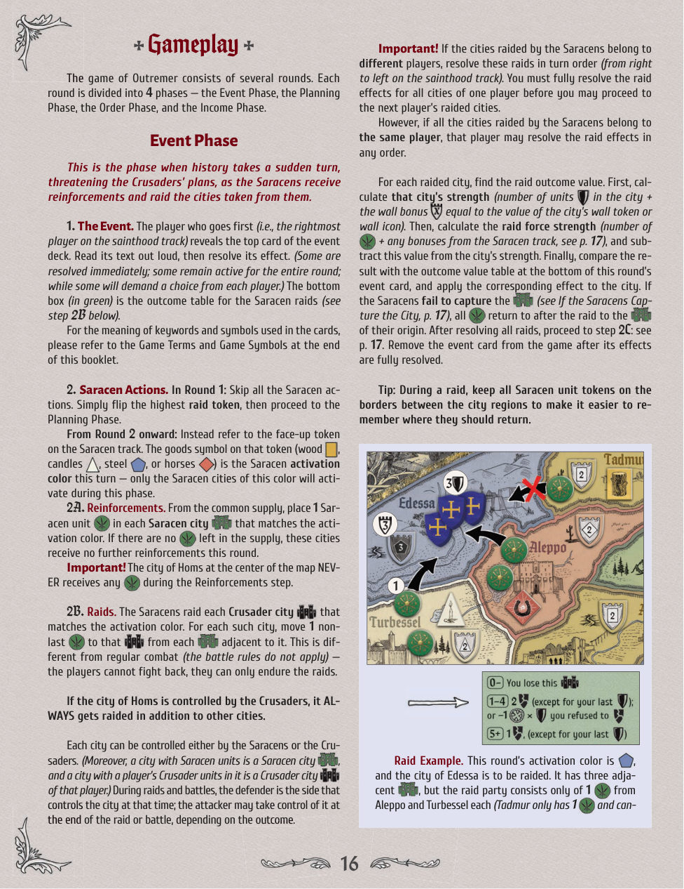
05事件阶段
这是历史突然转向的阶段：撒拉逊人获得增援、并劫掠那些被夺走的城市，十字军的计划因此受到威胁。
5.1 事件
起始玩家（即圣徒轨上最靠右的玩家）翻开事件牌堆顶牌，朗读其文字，然后结算其效果。有些效果立即结算；有些会持续整轮；还有些会要求每位玩家做出选择。
事件卡底部的绿框是撒拉逊劫掠的结果表（见 5.3）。卡上关键词与符号的含义，见书末的〈术语〉与〈符号速查〉。
5.2 撒拉逊行动
第 1 轮：跳过全部撒拉逊行动。只需把位置最高的突袭标记翻到正面，然后直接进入计划阶段。
第 2 轮起：改看撒拉逊轨道上已翻开的那枚标记。该标记上的资源符号（木材、蜡烛、钢铁或马匹）就是本轮的撒拉逊激活色——本阶段只有这一颜色的撒拉逊城市会启动。
5.2A 增援
从公共供应堆，在每个颜色相符的撒拉逊城市各放 1 枚撒拉逊单位。如果公共供应堆里已经没有撒拉逊单位，这些城市本轮不再获得增援。
5.2B 劫掠
撒拉逊人劫掠每座颜色相符的十字军城市。对每座这样的城市：从与它相邻的每个撒拉逊城市各派 1 枚撒拉逊单位过去——但不能派出该城最后一枚单位。
这与常规战斗不同（战斗规则不适用）：玩家无法还击，只能承受劫掠。
每座城市要么由撒拉逊人控制，要么由十字军控制。（有撒拉逊单位驻守的城市是撒拉逊城市；有某位玩家十字军单位驻守的城市，就是该玩家的十字军城市。）劫掠与战斗时，防守方就是当时控制该城的一方；进攻方可能依结果在劫掠或战斗结束时取得控制权。
但如果本轮被劫掠的城市全属同一位玩家，该玩家可以自行决定结算顺序。
5.3 劫掠结算
对每座被劫掠的城市，求出劫掠结果值：
- 城市强度＝城内单位数 ＋ 城墙加成（等于该城城墙标记或城墙图标上的数值）。
- 劫掠方强度＝参与劫掠的撒拉逊单位数 ＋ 撒拉逊轨道奖励（见 5.5）。
- 用城市强度减劫掠方强度，得到差值。
- 把差值对照本轮事件卡底部的结果表，对该城施加对应效果。
如果撒拉逊人未能夺城（见 5.4），劫掠结束后所有参与的单位都返回原城。全部劫掠结算完毕后，进入 5.2C。事件卡效果全部结算完后，把它移出游戏。
结果值＝(3＋3) − 2 ＝ 4，为正数。查本轮事件卡：结果 4 表示控制埃德萨的玩家必须从该城移除 2 枚单位。结算完后，两枚撒拉逊单位各自返回阿勒颇与图贝塞尔。
5.4 如果撒拉逊人夺城
如果劫掠方强度 ≥ 城市强度，该城失守：
- 该玩家的城内单位必须撤退（即移动）到任意一座由同一玩家控制的相邻城市。若做不到，城内单位全部被消灭，退回你的个人供应堆。
- 撒拉逊人取得该城的控制权。参与劫掠的全部单位留驻该城。该城的等级不降低（改变城市等级的方法见〈建造命令〉）。
- 该玩家必须把该城产出的全部资源标记退回公共供应堆。
- 从该城的三片式城市计数器上弃掉总督卡，然后把该城市计数器退回公共供应堆。
5.5 新目标 · 撒拉逊轨道奖励
5.2C：如果撒拉逊轨道上有已翻开的标记，把它移出游戏。撒拉逊人获得该标记下方格子里印的奖励。然后翻开撒拉逊轨道上位置最高的突袭标记，作为下一轮的激活色。
| 轨道奖励 | 效果 |
|---|---|
| 进攻与守备 +1 | 撒拉逊劫掠方强度与撒拉逊城市守备强度各 +1。多个此类效果可叠加。 |
| 每城出兵 2 或 3 | 劫掠时每座撒拉逊城市改为贡献 2 枚或 3 枚非最后一枚单位（而不是常规的 1 枚）。这两个效果不叠加：只按其中较强的一个生效。 |
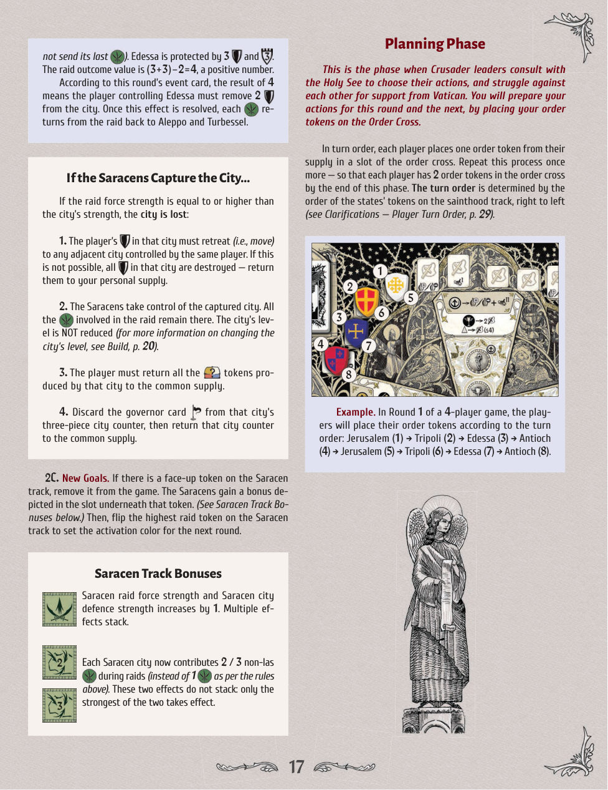
06计划阶段
在这个阶段，十字军领袖与圣座商议、选定自己的行动，并为争取梵蒂冈的支持而彼此角力。你把命令标记放到命令十字上，为本轮与下一轮安排行动。
按回合顺序，每位玩家从自己的供应堆拿 1 枚命令标记，放到命令十字的一个格子里。再重复一次——到本阶段结束时，每位玩家在命令十字上共有 2 枚命令标记。回合顺序由各国标记在圣徒轨上从右到左的位置决定。
6.1 命令十字
设置时每位玩家拿到 4 枚双面命令标记，每种命令各 1 枚：建造、祈祷、征召、行军。每枚标记有两面——基础面与强化面。标记只能放进命令十字上对应的扇区（建造放左、祈祷放上，以此类推）。
而且你必须选择放在该扇区的内格（作为基础命令）还是外格（作为强化命令）。
内格 · 本轮结算
放在内格的命令本轮结算。如果该格已被其他标记占用，你仍可把自己的标记压在它们上面形成一叠——但你必须给你下面每一枚命令标记的所有者各付 1 钱币。
如果你钱不够，就必须改放另一枚命令标记到别处；如果这也做不到，你只能跳过。
6.2 强化命令（外格）
如果把命令标记放进外格，要让它强化面朝上。放好后立刻从间谍牌堆顶上抽 1 张卡——这是放置强化命令的奖励（外格上印的小瓶符号就是提醒）。你的强化命令将在下一轮结算，但会获得额外效果。
如果外格已被占用，你不能把标记放在那里。
1. 耶路撒冷把祈祷标记放进外格（强化面朝上）。这意味着本计划阶段其他玩家不能再放祈祷外格。因为放了强化命令，耶路撒冷立刻从牌堆顶抽 1 张间谍卡。
2. 的黎波里把建造标记放进内格。
3. 埃德萨也想把建造放进内格。为此必须先付给的黎波里 1 钱币，然后才能把蓝色建造标记压到黄色标记上。
4. 安条克把征召标记放进内格。
5. 轮到耶路撒冷的第二个命令。由于同一轮不能放两个外格命令，耶路撒冷必须放内格：建造（要付的黎波里 1、埃德萨 1）、征召（要付安条克 1）或行军（免费，因为那格没人）。耶路撒冷选择征召，付给安条克 1 钱币，把白色征召标记压在红色标记上。
6. 的黎波里把祈祷标记放进内格。
7. 埃德萨把征召标记放进外格作为强化命令，并从牌堆顶抽 1 张间谍卡。
8. 安条克把征召标记放进内格。
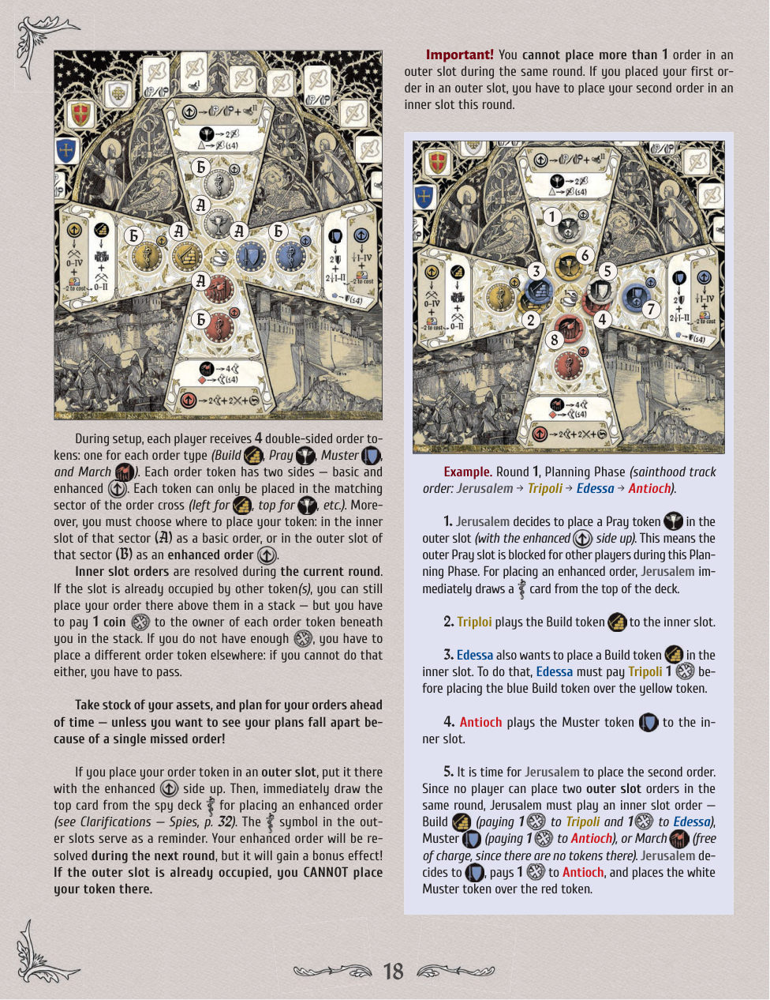
6.3 自动机（2–3 人局）
3 人局：缺席国家的命令标记由 5 枚自动机标记替代——4 枚基础自动机命令标记和 1 枚强化命令标记。
设置时，你必须把未使用国家的木制盾形标记放进圣徒轨最右端，作为自动机的圣徒标记。该标记永不移动，因此自动机在每个计划阶段总是第一个与第五个放置行动。
需要自动机放置行动时：把它的行动标记翻到背面、洗混、随机翻开 1 枚，放进命令十字对应的内格。如果翻开的是强化命令标记，把它放到一边，立刻再翻开 1 枚自动机标记：尽量把这枚放进对应的外格（如果该外格已有标记，就改为放进对应的内格）。计划阶段结束时，把强化命令标记退回自动机供应堆。
替自动机放标记时，仍按计划阶段规则处理付钱：如果自动机要因压在你标记之上而付你 1 钱币，你从公共供应堆拿 1 钱币；如果你要付自动机 1 钱币，则改为退回公共供应堆 1 钱币。
命令阶段中自动机不执行任何行动：把它在命令十字上的行动标记收回自动机供应堆。
设置时自动机在圣徒轨最右的两个格子各拿 1 枚圣徒标记。这两枚标记永不移动：自动机在每个计划阶段总是放置第一、第二、第五、第六个行动。其余按 3 人局规则，但有一处例外：如果你在翻开强化命令标记之后立刻又翻开第二枚强化命令标记，把两枚都放到一边，忽略第二枚，改为翻开第三枚标记放进本轮的外格。（不过 2 人局中自动机连续打出两个强化命令的概率更高。）
07命令阶段
在这个阶段，十字军发展自己控制的城市、扩张宗教影响力、充实军队、夺取新的土地——办法就是结算你放到命令十字上的命令。
结算命令十字内格上所有标记的效果。从建造开始，然后顺时针依次进行——行军最后结算。如果某个内格里有多枚标记，自上而下逐个结算。
结算一个命令时，由该命令标记的所有者执行其效果：这就算作你的回合（也就是说“在你的回合中”＝“你在结算任一命令期间”）。各命令的效果就印在命令十字对应扇区旁边。结算完毕后，把该命令标记收回个人供应堆。
内格里的命令全部结算完后，把命令十字外格上的所有命令标记移到对应的内格。不要把它们翻面。这些命令将在下一轮生效。
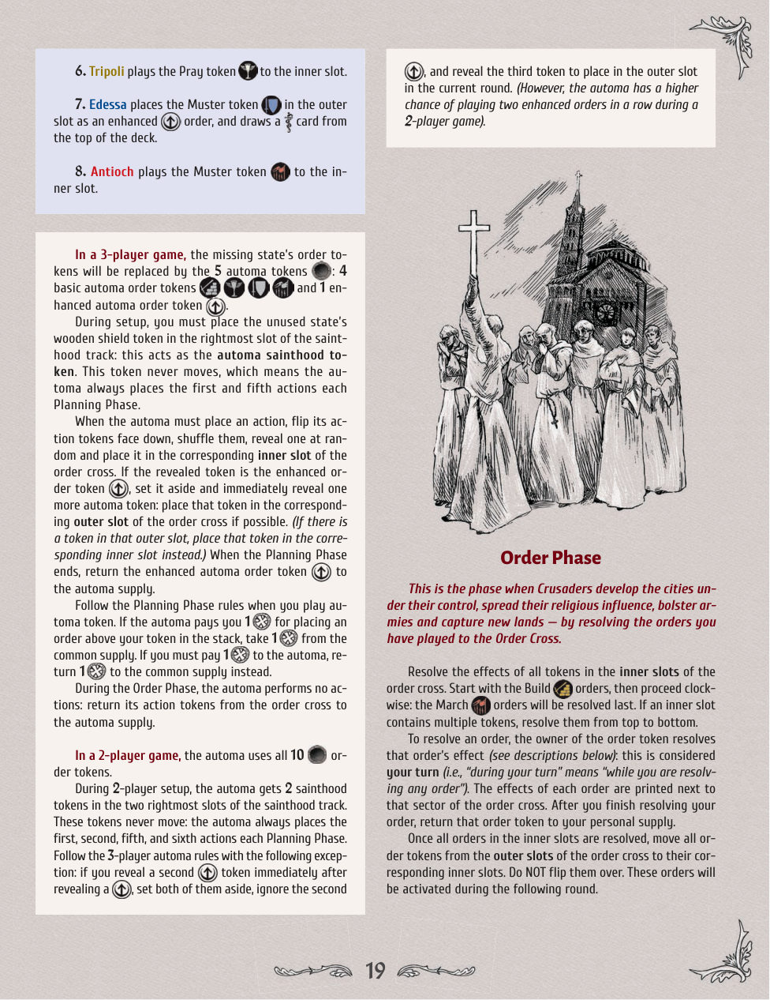
08建造命令
建造命令让你发展自己城市的经济。
每座城市有三个特征：
- 城市等级——代表该城基础设施的水平与居民的富足程度。等级越高，每轮产出的钱币越多，战斗与劫掠时的城墙加成越强，还能取用更多资源。（城市等级＝城墙标记／城墙图标的数值，也＝三片式计数器露出的扇区。等级最低 1、最高 3。）
- 资源——该城出产的东西（木材、蜡烛、钢铁、马匹或香料）。当你取得一座城市的控制权时，把该城的资源标记放在自己国家板的储藏区：这些资源可以花在各种效果上。
- 地形效果——影响攻打此城者的特殊修正。这些修正是可选的，只在困难难度下使用；详见《剧本规则》第 3 页。
此外，建造命令还让你修建建筑——为你控制的所有城市提供改良。所有建筑都必须放在你的国家板上。
8.1 基础建造命令
结算基础建造命令时，你可以按任意顺序执行以下行动中的一项或两项：
◆ 升级城市
支付某座你控制城市的升级费用（以钱币计），把它的等级 +1。升级费用印在该城三片式计数器露出的扇区里、虚线旁边。
你可以用资源替代部分或全部钱币——即：每 1 个你不愿或无法支付的钱币，改付 1 个资源。
城市等级 +1 时：把该城三片式计数器的顶片顺时针转一格，然后翻动该城的城墙标记，让新数值与新的等级一致。如果该城没有城墙标记（只有主板上印的城墙图标），就从公共供应堆取用对应的城墙图标。
城市计数器露出的扇区显示：该城产出的资源标记（视等级可能是多个）、以及它在每个收入阶段产出多少钱币。1 级与 2 级的扇区还会显示升到下一级的花费。有些城市升到 3 级时会额外产出 1 个资源标记：这时立刻从公共供应堆把对应资源放到你的储藏区（可以马上花掉）。
◆ 建造 0–II 级建筑
在建筑区的市场上，取 1 张等级 0、I 或 II 的建筑卡，用资源支付其价格。不要补市场！建筑卡的等级＝它的价格。巴扎是 0 级建筑，可以免费取得。
你可以用钱币替代部分或全部资源——即：每 1 个你不愿或无法支付的资源，改付 1 个钱币。
把买到的建筑放在国家板上未被占用的建筑格里，让它的效果可见。如果你有多张建筑卡，就自下而上排成一列：每张卡必须正好盖住一个建筑符号，且上面那张略微压住下面那张（按图示）。如果你要放新建筑而所有建筑格都已被占用（每块国家板有 4 个建筑格），你必须弃掉 1 张建筑卡——可以是你刚拿到的这张，也可以是板上已有的任意一张。
1. 花 1 个资源 ＋ 2 钱币，把 2 级首都升到 3 级。由于该城现在多产 1 个资源，玩家在升级后立刻拿到 1 个对应资源放进储藏区。收入阶段时他将收到 3 钱币。
2. 从建筑市场修建城堡礼拜堂。由于手上没有资源，他改付 2 钱币，把这张卡放进国家板上的空建筑格。此后每次结算祈祷命令之后，他都能训练 1 名新主教（把新主教标记加到场上）。
8.2 强化建造命令
结算强化建造命令时，先以 2 钱币的折扣执行基础建造的效果（这个折扣可以任意分配给两个行动）。此外，你还可以额外建造 1 张任意等级的建筑——按上面 0–II 级的规则处理，但 III–IV 级此时也开放。这是常规取得这些强力建筑的唯一途径。（这 2 钱币的折扣不适用于这个额外行动，无论建筑是什么等级。）
也就是说，一次强化建造命令总共能建 2 座建筑——一座来自基础行动，另一座来自额外行动。
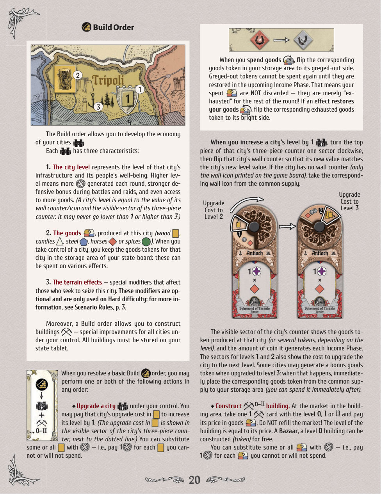
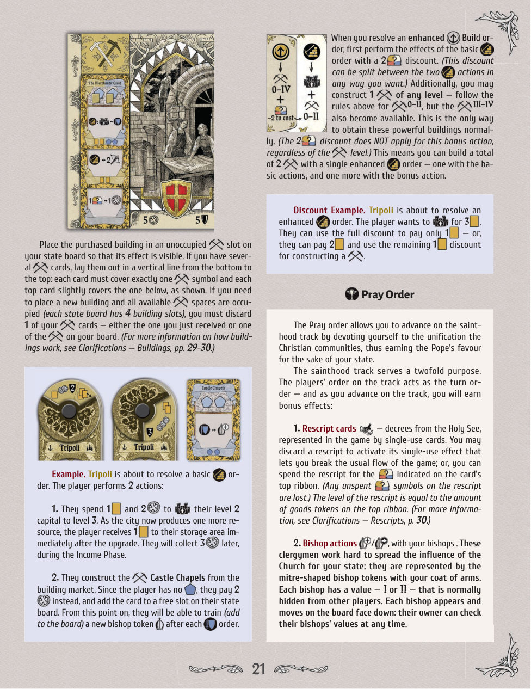
09祈祷命令
祈祷命令让你通过献身于基督徒团体的合一，在圣徒轨上前进，从而为国家赢得教皇的青睐。
圣徒轨有两重作用：玩家在轨上的排序就是回合顺序；而你在轨上前进时，还能获得奖励效果：
- 敕令卡——来自圣座的敕令，在游戏中用一次性卡牌表示。你可以弃掉一张敕令来发动它的一次性效果（让你打破常规流程）；也可以把敕令当作资源花掉——按卡上缎带标示的资源数量使用（缎带上没用完的资源符号会作废）。敕令的等级＝其缎带上的资源标记数量。
- 主教行动（训练／移动）——用你的主教执行。这些神职人员努力为国家扩张教会的影响力：他们用印有本国纹章的主教冠形标记表示。每位主教有一个数值——I 或 II——通常对其他玩家保密。主教在板上始终面朝下出现与移动；其所有者可随时查看自己主教的数值。
9.1 圣地
如果某位玩家在某座城市的主教等级总和高于其他任何玩家在该城的总和，这座城就成为他的圣地——不论谁控制该城。
如果有多位玩家争夺圣地（即同一座城里至少有两位玩家各有主教），则在每轮结束时（见〈收入阶段〉）或敕令效果要求时进行圣地判定。判定时，把该城全部主教标记翻开：只有等级总和最高的玩家在那里拥有圣地。若平手，则无人拥有圣地。如果城里只有一位玩家有主教，则无需判定，直接获得圣地。
每处圣地在每轮结束时给予影响分。部分终局条件、教皇诏书与敕令效果也会要求圣地。
9.2 基础祈祷命令
结算基础祈祷命令：获得 2 点圣徒点数。你还可以最多花 4 个资源，每花 1 个资源额外获得 1 点圣徒点数。你可以用钱币替代部分或全部资源——即每 1 个资源改付 1 钱币。
每当获得圣徒点数（无论来自祈祷命令还是其他来源），你必须立刻把点数全部用来把自己的标记在圣徒轨上向右推进——1 点走 1 格。如果下一格已被别人的标记占用，就跳过它：每跳过一格被占用的格子不额外花点数。
每当你的标记停在、经过或跳过圣徒轨上带效果图标的格子，你获得该图标所示的奖励（即使该格被占用也算）。但圣徒轨奖励只能在你标记移动完毕之后领取。
| 圣徒轨图标 | 奖励 |
|---|---|
| 渡鸦 | 从 I 级敕令牌堆（轨道左侧，牌背为渡鸦）顶上抽 1 张卡 |
| 主教行动 | 执行 1 次主教行动（训练 1 名主教 或 移动 1 名主教） |
9.3 主教行动
每当必须执行主教行动，你必须在下面两项中选一项：
- 训练新主教：从个人供应堆任意取 1 枚主教标记，面朝下放进任意一座有你自己主教的城。（如果板上还没有你的主教，就放进任意一座你控制的城。若个人供应堆里已无主教标记，你无法训练。）
- 移动你控制的主教：把你任意一名主教从当前城市移到任意相邻城市。（可以移进对手的城市，甚至撒拉逊城市。）
如果一次命令或效果要求你执行多次主教行动，你必须先做完全部训练，再做任何移动。（而且同一个命令中不能移动同一位主教超过一次。）
- 2 次训练：把共 2 枚主教标记放到任意有自己主教的城；
- 1 次训练 ＋ 1 次移动：先把 1 枚主教放进任意有自己主教的城，然后移动自己 1 名主教到相邻城市（甚至可以是刚放下的那座）——但只能按这个顺序；
- 2 次移动：把 2 名不同的主教各移到相邻城市。
9.4 强化祈祷命令
结算强化祈祷命令时，执行基础祈祷的效果。在你走完圣徒轨之后，你还额外获得 1 次主教行动，并从 II 级敕令牌堆（轨道右侧，牌背为鸽子）顶上抽 1 张卡。这个奖励是常规取得这些强力敕令的唯一途径。
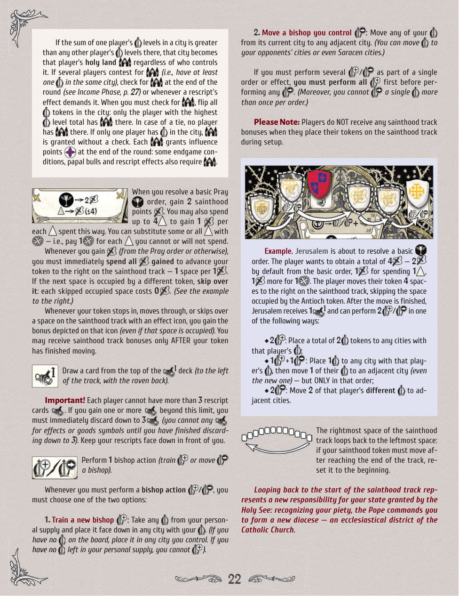
10征召命令
征召命令帮你充实军队，好让国家守住城市或征服新的土地。战斗的成败取决于两件事：
- 单位——印有本国纹章的木制盾形标记，代表为你的十字军国家作战的士兵。战斗或劫掠时，你每有 1 枚单位，战斗力 +1。
- 战术——战斗中使用的战斗卡。只要有人在命令阶段结算行军命令，就可能发生战斗。
10.1 基础征召命令
结算基础征召命令时，你可以按任意顺序执行以下行动中的一项或两项：
1. 招募单位
从个人供应堆取 2 枚单位，按任意方式分配到你的城市（即有你自己单位的城）。你还可以最多花 4 个资源，每花 1 个资源额外招募 1 枚。你可以用钱币替代部分或全部资源——每 1 个资源改付 1 钱币。（若个人供应堆里已无单位，就无法再招募。）
2. 学习新战术（I–II 级）
在战术区的市场上，选择最多 2 张 I 级和／或 II 级卡，用资源支付价格后取走。不要补市场！战术卡的等级＝它的价格。你可以用钱币替代部分或全部资源——每 1 个资源改付 1 钱币。
但如果你在买新战术之后弃掉的是 0 级卡（印有本国纹章的起始战术），要把它们面朝下放到国家板下方：这是你的个人 0 级弃牌堆，不要放进公共弃牌堆。
1. 从个人供应堆招募 4 枚单位并分配到自己的城市（基础命令默认 2 枚，花 1 资源加 1 枚、花 1 钱币再加 1 枚）。
2. 从市场学习 2 张新战术：背信贿赂与焦土。玩家此时只剩 1 个资源，所以还得付 2 钱币才能买下这 2 张卡。拿到新战术之后必须弃到 5 张：他弃掉 2 张自选的起始卡——火焰审判与增援，这两张 0 级卡进入他的个人弃牌堆。
10.2 强化征召命令
结算强化征召命令时，先以 2 钱币的折扣执行基础征召的效果（折扣可任意分配给两个行动）。此外，你还可以额外学习 1 张任意等级的战术——按上面 I–II 级的规则处理，但 III–IV 级此时也开放。这是常规取得这些强力战术的唯一途径。（这 2 钱币的折扣不适用于这个额外行动，无论战术是什么等级。）
也就是说，一次强化征召命令总共能学 3 张战术——2 张来自基础行动，1 张来自额外行动。
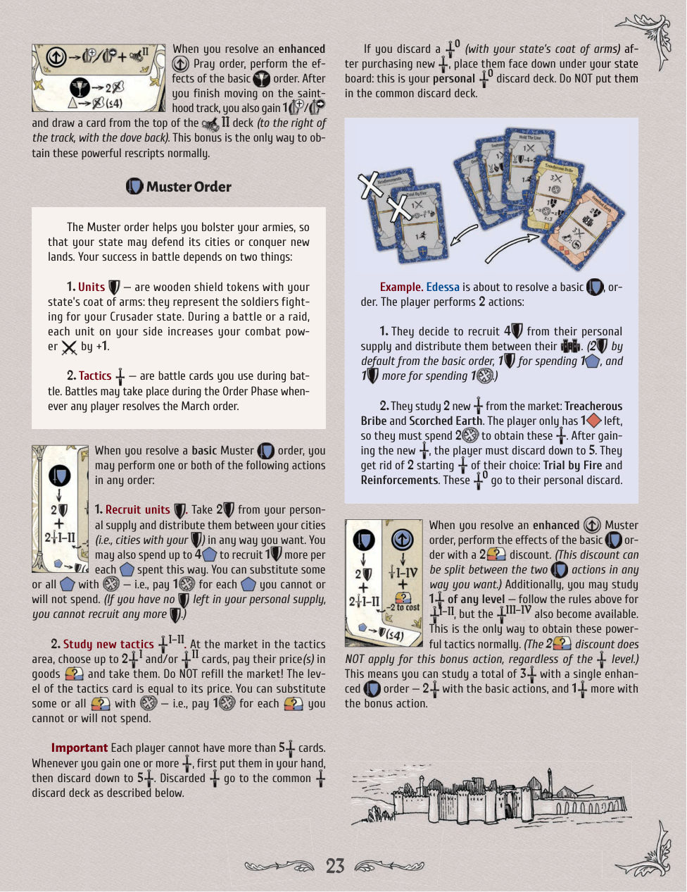
11行军命令
行军命令让你在自己的城市之间调动单位，或者与撒拉逊人、敌对十字军国家开战。
11.1 基础行军命令
结算基础行军命令时，先选定目标——一座与你至少一座城市相邻的城市。然后把最多 4 枚你的单位从你的城市移到目标城市。这些单位可以来自任何与目标相邻的你的城市。
你默认拥有 4 次单位移动行动；还可以最多花 4 个资源，每花 1 个资源额外获得 1 次。你可以用钱币替代部分或全部资源——每 1 个资源改付 1 钱币。
移动完单位后，进行战斗判定。
11.2 强化行军命令
结算强化行军命令时，执行基础行军的效果，并额外多 2 次移动。如果这次强化行军引发了战斗，该场战斗中你获得 +2 战斗力。也就是说，你可以免费做 6 次移动，再用资源／钱币购买最多 4 次。
此外，在强化行军命令的任意时刻，你可以弃掉自己控制的任意一座城市的 1 张总督卡，用市场上的任意一张总督卡替换他。这个额外效果可以在移动之前或之后结算，甚至可以在你刚夺取的城市里安放新总督之后结算。
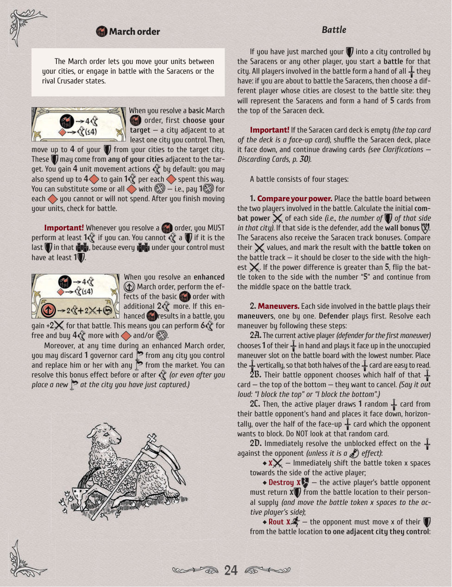
12战斗
如果你刚把单位行军进一座由撒拉逊人或别的玩家控制的城市，就为该城开战。参战的所有玩家把各自手上的战术卡组成手牌。如果你是与撒拉逊人作战，则另选一位玩家（其城市离战场最近者）代表撒拉逊人，他从撒拉逊牌堆顶上取 5 张卡组成手牌。
一场战斗分四个阶段。
12.1 第一阶段 · 比较战斗力
把战场板放在参战双方之间。计算双方各自的初始战斗力（即该方在该城的单位数）。如果该方是防守方，加上城墙加成。撒拉逊人还会获得撒拉逊轨道奖励。
比较双方战斗力，用战斗标记在战场轨道上标出结果——应偏向战斗力较高的一方。如果战斗力差大于 5，把战斗标记翻到印着“5”的那一面，并从轨道中央格开始继续。
12.2 第二阶段 · 战术机动
参战双方轮流打出各自的机动（战术卡），防守方先打。每次机动按以下步骤结算：
- 2A 当前行动方（第一次机动时是防守方）从手牌选 1 张战术卡，正面朝上打进战场板上编号最小的空机动格里。竖直放置，让卡的两半都便于阅读。
- 2B 对手选择要抵消这张卡的哪一半——上半还是下半。（要说出声：“我挡上面”或“我挡下面”。）
- 2C 然后，当前行动方从对手手牌中随机抽 1 张卡，横向、面朝下盖在对手要抵消的那一半上。不要看这张随机卡。
- 2D 立刻结算这张战术卡上未被抵消的效果（若该效果属于“战斗结束时”则暂不结算）：
- ＋x 战斗力：立刻把战斗标记朝当前行动方方向移动 x 格；
- 消灭 x 单位：当前行动方的对手必须把 x 枚单位从战场退回个人供应堆（同时把战斗标记朝当前行动方移动 x 格）；
- 击溃 x 单位：对手必须把 x 枚单位从战场移到其控制的一座相邻城市；这些单位退出本场战斗（若无相邻城市可去，则改为被消灭）。若被击溃的是撒拉逊单位，则退到一座相邻的撒拉逊城市——由本场代表撒拉逊人的玩家选择；无处可去则被消灭。（两种情况都把战斗标记朝当前行动方移动 x 格。）
- 增援 x 单位：当前行动方可从自己控制的相邻城市调动最多 x 枚非最后一枚单位到战场，从而提升战斗力。（每调入 1 枚，战斗标记朝当前行动方移动 1 格。）
当前行动方结算完机动后，对手成为新的行动方，也必须打出并结算一次机动。当双方各打出并结算了 2 次机动（共 4 次）后，进入第三阶段。如果任一方在战场上已无单位，另一方立刻获胜——直接进入 12.4 战斗结束。
如果撒拉逊人参战，带十字军标记（战斗力、消灭、击溃、增援等）的效果同样适用于撒拉逊单位。
12.3 第三阶段 · 判定胜者
战斗力较高的一方获胜。如果双方战斗力差为 0，则进攻方获胜。
12.4 第四阶段 · 战斗结束
4A “战斗结束时”效果
如果有战术卡带“战斗结束时”才结算的效果，现在按行动顺序结算。你不想结算的可以不结算——不必把带此类效果的卡全部用掉。
最常见的一类效果是让对手失去 x 张战术卡：
- 对另一位玩家：该玩家把本场战斗中打出的全部战术卡（战场板上他那侧的正面卡）洗混，随机弃掉 x 张。因“失去战术卡”而弃牌之后，该玩家总是从个人 0 级弃牌堆中自选取回同数量的起始卡。若你因“失去战术卡”被迫弃掉一张 0 级卡，则改为取消那次失去。
- 对撒拉逊人：改为把本场战斗中用过的 x 张随机撒拉逊战术卡移出游戏。
- 如果要求你失去 3 张以上，你只失去 2 张。
- 因“失去战术卡”被弃掉的那张卡上若还有“战斗结束时”效果，仍可结算。
- 战斗之外（例如事件效果）：每有 1 次“失去”，就从手牌自选弃 1 张战术卡，然后从个人 0 级弃牌堆自选取回同数量的 0 级卡。
撒拉逊人的“战斗结束时”效果可能影响你的资产，例如封锁一枚资源、摧毁一座建筑等。如果该效果需要做出选择（例如你有多个可被瞄准的建筑），由本场代表撒拉逊人的玩家来选择。撒拉逊人的此类效果你必须全部结算。
4B 撤退
如果败方在战场还有单位，先消灭其中 1 枚。败方剩余单位必须从该城撤退到其控制的一座相邻城市（若做不到则改为被消灭）。然后双方收回本场战斗中打出的剩余战术卡：本场用过的撒拉逊战术卡全部弃掉。
4C 荒废
发生战斗的城市总会受到战火摧残（即使防守方获胜也一样）。如果该城等级 ≥ 2，降低 1 级：把城市计数器顶片逆时针转 1 格，然后翻动或移除该城的城墙标记以反映变化。如果因荒废该城不再产出额外的资源标记，控制该城的玩家必须立刻从国家板上弃掉该类型的任意资源（即使它已被封锁或已花掉）。
4D 战利品
如果进攻方获胜，他取得该城的控制权：把该城的三片式计数器与该城产出的全部资源拿走，分别放到自己的国家板与储藏区。（如果你是从另一位玩家手里夺城，对方按当时的状态把相应数量的、由其自选的资源交给你——已花掉的不恢复。）
如果该城没有总督，从市场上选 1 张总督卡插进该城计数器。如果该城已有总督，你可以保留，也可以用市场上的新总督替换。不要刷新市场！
① 战斗力差：安条克 6 战斗力；阿帕梅亚 2 枚单位＋城墙 2＋轨道奖励 +1（第 2 轮）＝5。差值 6−5＝1，进攻方领先。
② 机动：防守方先打《阿帕梅亚的弓手》。安条克选择抵消下半效果，以避免战斗结束时损失战术卡。撒拉逊代表从安条克手牌随机抽 1 张盖在下半，随即结算上半效果：撒拉逊战斗力 +2，且安条克 2 枚单位必须立刻撤离本场战斗、退回相邻的安条克城市。战斗力天平由此向防守方偏移 4 格，撒拉逊人反超 3 点。
安条克打出《火焰齐射》。若上半被抵消，剩下的 2 点将消灭敌军、安条克获胜——于是撒拉逊人选择抵消下半（用一张随机手牌）。上半效果为安条克 +2 战斗力且阿帕梅亚战斗力 −1，天平向安条克偏移 3 格：当前战斗力差回到 0。战斗继续……
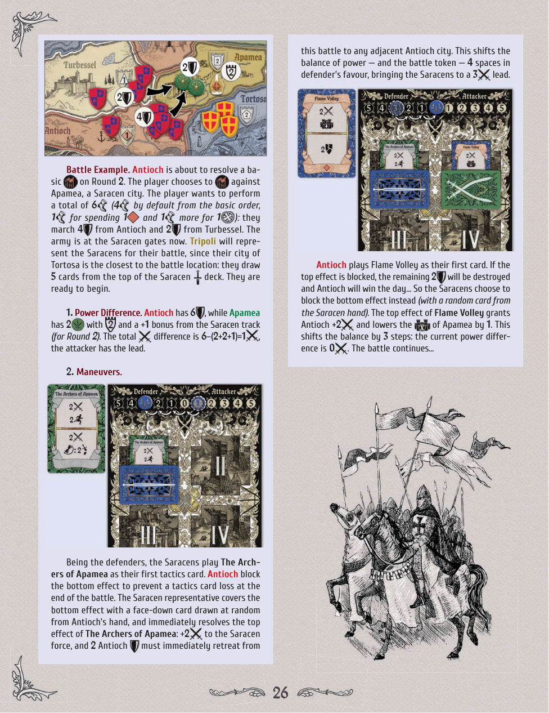
13收入阶段
这是十字军国家享受经济与政治决策成果的阶段：收税、恢复资源与刷新市场、让建筑与间谍重新可用；并通过主教与总督扩大影响力。
13.1 征税
每位玩家从公共供应堆取得钱币，数额取决于其控制城市产生的总量（每座城产多少钱看三片式计数器露出的扇区）。每位玩家还为自己的首都额外获得 +1 钱币（印在国家板上首都城市格下方）。
注意：取用或支付时看的是钱币的面值，不是钱币的枚数。
13.2 资源与市场
- 恢复所有已花掉的资源：把每个灰化的资源标记翻回彩色面（除非上面压着封锁标记）。
- 刷新主板上的所有市场：每个空的市场格，从对应牌堆顶上取 1 张卡正面朝上补进去。
- 移除所有玩家建筑上以及资源上的封锁标记，并把所有已激活间谍上的标记翻回可用面。
13.3 总督与圣地
每位玩家按自己总督卡上每一条已满足的条件获得影响分。接着进行圣地判定：每位玩家每处圣地获得 1 影响分。
注意：获得的分数看标记的数值，不是标记的枚数。主教标记保持面朝下——其数值在游戏结束前必须对其他玩家保密。
13.4 轮末
检查终局条件（见 14）。如果没有触发任何终局条件，就进入下一轮。
接着该玩家获得 6 影响分：
1. 耶路撒冷总督鲍德温给 1 分（玩家储藏区里只有 1 个资源）；
2. 阿卡总督瓦勒兰给 2 分（玩家所有城市等级合计为 5）；
3. 大马士革总督安茹的富尔克给 1 分（玩家共 8 枚单位）；
4. 玩家在 2 处圣地（耶路撒冷与大马士革）各得 1 分。
但阿卡不是圣地：的黎波里在那里也有主教，等级与耶路撒冷的主教相同。
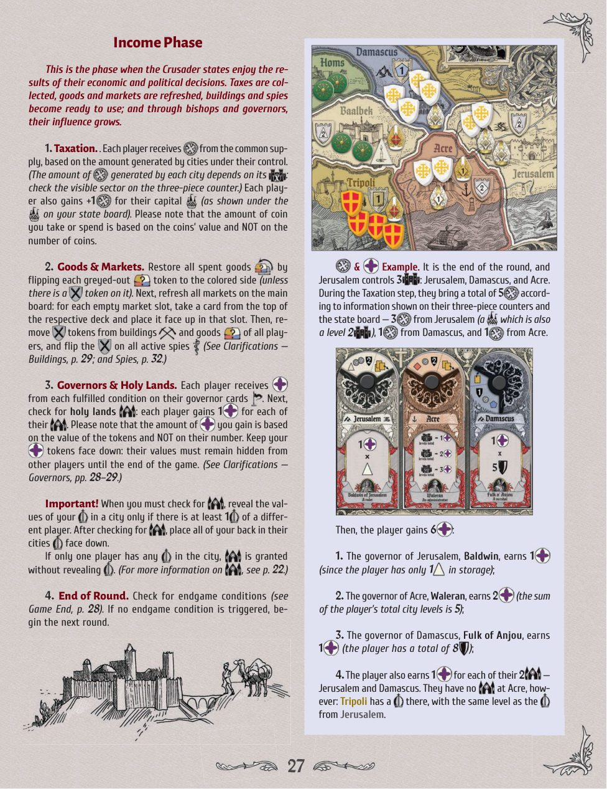
14游戏结束与计分
如果在任意一轮结束时满足以下任一条件，游戏结束。
| 终局条件 | 判定 |
|---|---|
| 1 霸权 | 任意一位玩家控制 4 座城市 |
| 2 圣德 | 任意一位玩家拥有 5 处圣地 |
| 3 十字军覆灭 | 任意一位玩家失去了最后一座城市（即他在任何城市里都没有单位） |
| 4 时代终结 | 事件牌堆用尽（即第 6 轮结束时） |
如果在本轮结束时（由一位或多位玩家同时）满足上述条件，就进入计分。
计算影响分
游戏结束后，每位玩家先算出自己影响分标记的总值，再加上以下加成：
- 按教皇诏书条件获得的分数（分数算法见卡面）；
- 如果你满足了霸权或圣德终局条件，得 8 分（多位玩家同时满足则各得 8 分；两项同时满足得 16 分）；
- 储藏区里每 4 钱币得 1 分，向下取整（按钱币的面值算，不是按枚数）。
比较总分：影响分最高者获胜！若平手，则满足终局条件更多的玩家获胜（从高到低：同时满足霸权与圣德；只满足其中之一；都没满足）。若仍平手，则圣徒轨上标记更靠右的玩家获胜。
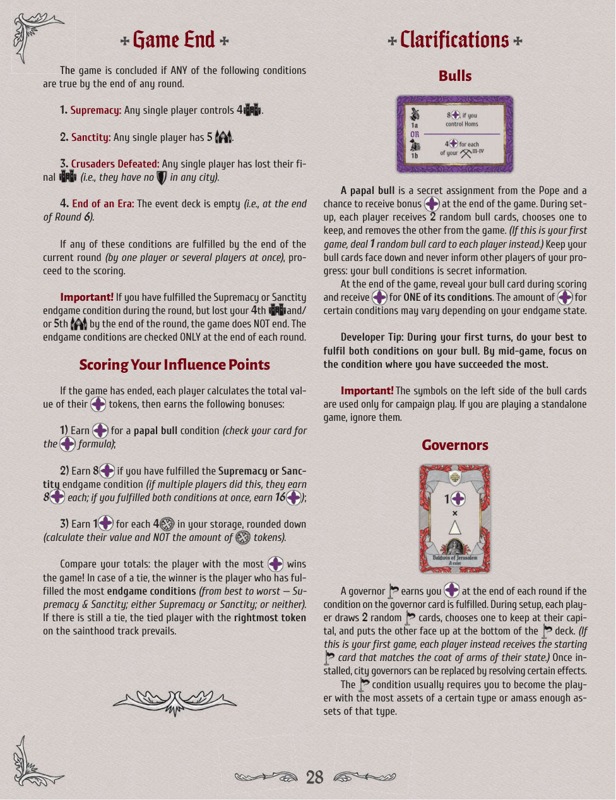
15规则澄清
15.1 教皇诏书
教皇诏书是教皇交给你的秘密任务，也是终局拿额外影响分的机会。设置时每位玩家随机抽 2 张诏书卡，留 1 张，另一张移出游戏。（如果是你的第一局，改为每位玩家随机发 1 张。）诏书卡面朝下放好，永远不要向其他玩家透露你的进度：你的诏书条件是秘密信息。
游戏结束时，在计分阶段翻开你的诏书卡，为其中一条条件取得影响分。某些条件的分数会依你的终局状态而变化。
15.2 总督
只要总督卡上的条件得到满足，这位总督就在每轮结束时为你带来影响分。设置时每位玩家随机抽 2 张总督卡，留 1 张放在首都，另一张正面朝上放回总督牌堆底部。（如果是你的第一局，改为每位玩家领取与本国纹章相符的起始总督卡。）总督一旦上任，仍可通过某些效果被替换。
总督条件通常要求你成为某类资产最多的玩家，或积累足够多该类资产。
请注意
- 领先类条件：只要你在条件指定资产的数量上排第一，或并列第一，就能得分。你必须至少拥有 1 个该类资产才能得分。若不满足“领先”这一条，就无法从该总督处得分。
- 阿尔努夫·德·吕与耶路撒冷的梅丽桑德检查你在场上的主教数量，不是个人供应堆里的。安茹的富尔克与萨莱诺的理查德同样只算你在场上的单位数量。
- 圣吉尔的庞斯、勒皮的罗曼、库尔特奈的约斯兰与公国的罗杰检查你手牌 5 张战术卡的颜色。双色的 IV 级卡可以同时计入多条总督条件。
- 耶路撒冷的鲍德温、布尔克的鲍德温、图卢兹的贝特朗、塔兰托的博希蒙德与雷纳德检查你储藏区里的资源标记数量——不论其状态（可用、已花或已被封锁）。这些条件不能用钱币或其他东西替代资源。
15.3 回合顺序
回合顺序由各玩家标记在圣徒轨上的位置决定，从右到左：最右的是起始玩家，第二右的是第二位，最左的是最后一位。
如果某个效果同时指向多位玩家（撒拉逊劫掠、事件等），被指向的玩家必须按圣徒轨顺序（从右到左）依次结算。
如果在一个指向多位玩家的效果结算过程中回合顺序发生变化，该效果不得对同一位玩家生效两次。
15.4 建筑
拿到建筑卡时，把它放到国家板上未占用的建筑格（每块国家板有 4 个建筑格）。如果建筑格已满，你必须弃掉新卡，或弃掉板上任意一张建筑卡来腾出位置。
大多数建筑只要满足条件就能给你额外资产甚至额外行动。建筑卡上的“→”是条件效果：当左侧条件完整结算完（例如指定的命令结算完毕），你可以免费结算箭头右侧的效果。所有建筑效果每轮只能用一次，且只能在你自己的回合使用。结算建筑效果时，在该卡上放 1 枚标记；带标记的建筑不能再使用。每个收入阶段移除你所有建筑上的标记。
注意：巴扎这张建筑卡的效果可以在你自己的回合中随时手动使用。
一般来说，在建造命令之后触发的建筑效果，当轮就能用——因为命令完整结算时你已经控制了那座建筑。
IV 级建筑（基础牌堆里等级为 IV 的建筑卡）在满足条件时可以让你额外执行一次基础命令——具体是哪一种命令，印在该卡的效果里。这次额外命令不需要、也不会占用命令十字上的标记。此外，每张 IV 级建筑都是双色卡。
15.5 敕令
敕令卡有两种用法：
- 在卡上效果指定的任意时机弃掉它，以发动该效果；
- 在你的回合中，当你需要支付某种类型的资源时弃掉它。每张敕令按其上方缎带标示，充当 1 个或 2 个该类型资源。
注意：与钱币或资源不同，敕令卡上的资源符号不是它的费用——每张敕令永远免费打出。
① 在你参与的任何一场战斗中弃掉它——避免战斗后降低该城等级；
② 或在你的回合中弃掉它，当作 1 个某色资源使用（例如支付建造费用、修建黄色建筑、学习黄色战术、为巴扎效果提供 1 个资源等）。
15.6 市场
以下规则适用于建筑市场、战术市场与总督市场。
每当你要从市场上取卡时，你都可以改为从对应牌堆顶上取卡。这样做的话，要把那张卡亮给所有玩家看：只要付得起就必须买下（能付得起价格就不能拒买）。如果付不起牌堆顶那张卡的价格，就把它面朝下放回牌堆顶：本回合你不能再从市场上买卡（该行动已消耗）。
15.7 弃牌堆
当你必须弃掉一张建筑卡、敕令卡、战术卡（含撒拉逊战术卡）或总督卡时，把它正面朝上放到对应牌堆（若分级则为对应等级牌堆）的底部。牌堆底部所有正面朝上的卡构成该牌堆的弃牌堆。
不过，你的起始战术卡改为进入国家板下方的个人弃牌堆；已结算的事件卡与突袭标记则移出游戏。
如果某个牌堆用尽（顶牌已是正面朝上的卡），把弃牌堆洗混、面朝下放好，作为该类型、该等级的新牌堆。
15.8 首都
每位玩家的起始城市与其十字军国家同名：那座城就是该国的首都。始终把你首都的三片式计数器放在国家板最左侧的城市格。
你的首都在每个收入阶段为你额外产出 1 钱币（印在国家板首都城市格下方）；它也可能成为某些效果的目标。
每位玩家可以控制任意数量的城市及其三片式计数器。如果国家板上的格子放满了，就把新的城市计数器放到板右侧、与其他计数器排成一列（右边缘印有半个格子作提示：这同时标志你符合“霸权”终局条件的资格）。
如果你的首都在劫掠或战斗中失守，把首都移到你控制的任意其他城市（把那个城市的计数器放进最左侧格子）。如果某位玩家没有任何城市，就满足“十字军覆灭”终局条件，本轮结束后游戏结束。没有城市的玩家在剩余阶段中不能执行任何命令或行动（包括打敕令、发动间谍效果），但仍可在收入阶段由总督获得影响分，也仍可争夺“圣德”终局条件。
15.9 战术卡
基础牌堆中有些 IV 级战术卡的效果，取决于本张 IV 卡作为机动打出之前，本场战斗中已打出的某色战术卡数量。该效果统计本场战斗中打出的所有该色卡——包括你自己打的（含这张 IV 本身）与对手打的。
每张 IV 级卡都是双色卡；而每张起始战术卡都没有颜色。
上半可给 +7 战斗力（默认 +3，本场战斗中每有一张白色战术卡再 +2，含自身）；
下半可消灭 5 个敌方单位（默认 1，本场战斗中每有一张蓝色战术卡再 +2，含自身）。
15.10 霍姆斯
任何玩家夺取霍姆斯时，必须取走霍姆斯特殊能力卡，放在自己国家板旁。每轮一次，控制霍姆斯的玩家可以把自己打到命令十字内格的一个命令强化。他不能因此抽间谍卡。
霍姆斯出产香料——一种特殊资源。每 1 个香料都可以当作任意其他类型的 1 个资源使用，包括用于某些总督条件与教皇诏书。
如果霍姆斯由撒拉逊人控制，它永远不获得增援。如果霍姆斯由任何十字军国家控制，撒拉逊人在每个事件阶段只要能做到，就会在常规劫掠目标之外额外劫掠霍姆斯。
15.11 间谍卡
每当把你的命令标记放进命令十字的外格，你就必须抽 1 张间谍卡——它让你的间谍渗透进某个敌对的十字军国家。
获得间谍卡时，你可以激活它：正面朝上放进自己的一个间谍格；也可以把它暗藏在手牌里。激活时，从个人供应堆取一枚其他玩家的盾形标记压在间谍卡上，标示该玩家是这次间谍行动的目标。
任何间谍卡都可以在命令阶段从手牌打出，但只能在你自己的回合。同一回合内可以打出任意数量的间谍卡。每块国家板左边缘有 3 个已激活间谍格。
| 人数 | 瞄准限制 |
|---|---|
| 4 人 | 每位对手最多只能被 1 张间谍卡瞄准 |
| 3 人 | 每位对手可被 1 或 2 张瞄准（但总数不超过 3 张） |
| 2 人 | 你的对手可被 最多 3 张瞄准 |
如果所有已激活间谍格都已被占用，你在打出新间谍卡之前必须先弃掉一张已激活的间谍卡。
已激活间谍卡的效果，可能在该卡瞄准的对手完成某个行动、满足条件时，立刻让你获得额外资产。间谍卡上的“→”是条件效果：当左侧条件被该对手完整满足时，瞄准他的那张间谍卡的所有者可免费结算箭头右侧的效果。该效果每轮只生效一次。
结算间谍效果时，把该间谍卡上的盾形标记翻到已用面。带已用标记的间谍卡不能再用。收入阶段把每张已激活间谍卡上的标记翻回可用面。
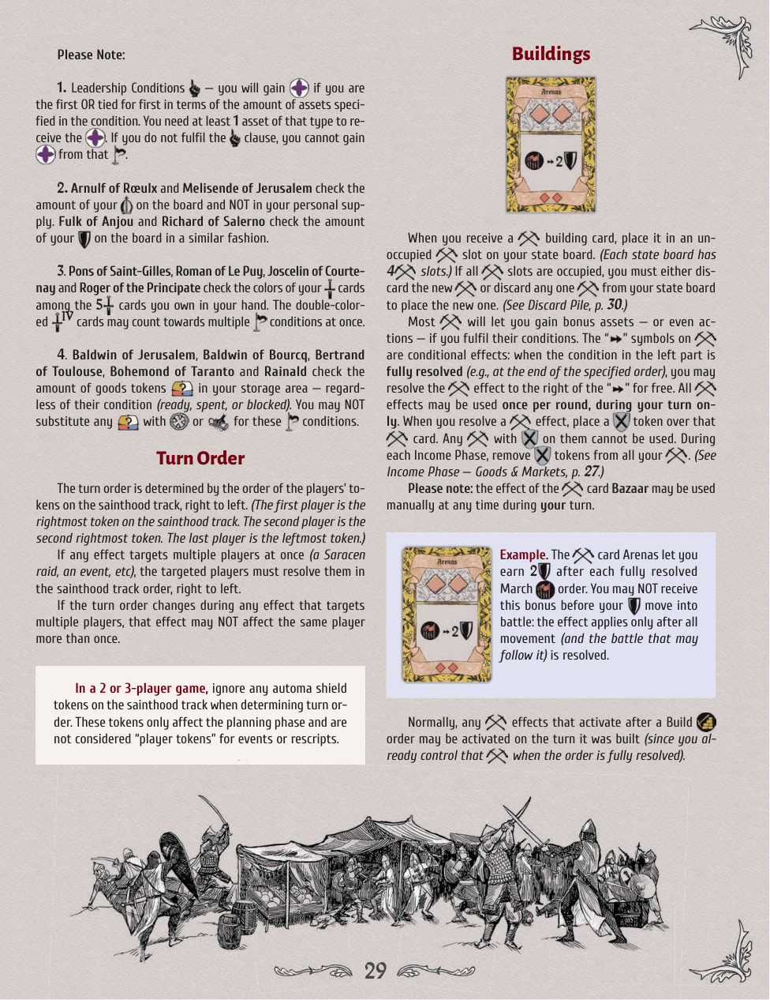
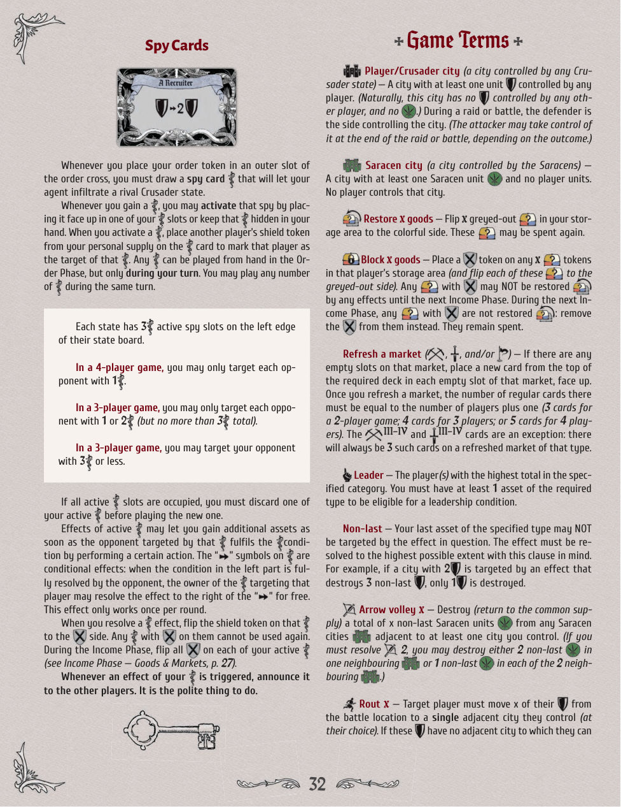
A术语
| 术语 | 含义 |
|---|---|
| 玩家城市／十字军城市 | 由任何十字军国家控制的城市——城内至少有一枚某玩家控制的单位。（自然，该城内没有其他玩家的单位，也没有主教。）劫掠或战斗时，防守方就是当时控制该城的一方；进攻方可能依结果在劫掠或战斗结束时取得控制权。 |
| 撒拉逊城市 | 由撒拉逊人控制的城市——城内至少有 1 枚撒拉逊单位，且没有玩家单位。没有玩家控制该城。 |
| 恢复 x 资源 | 把储藏区里 x 枚灰化资源翻回彩色面。这些资源可以再次花用。 |
| 封锁 x 资源 | 在该玩家储藏区的 x 枚资源标记上各放 1 枚封锁标记（并把这些资源翻到灰化面）。带封锁标记的资源在下一个收入阶段之前，不能被任何效果恢复。下一个收入阶段时，带封锁标记的资源不恢复：改为移除封锁标记，它们仍处于已花状态。 |
| 刷新市场 | 若该市场上有空位，就从对应牌堆顶上取新卡，正面朝上补进每个空位。市场刷新后，其中常规卡的数量必须等于玩家人数 +1（2 人局 3 张、3 人局 4 张、4 人局 5 张）。III–IV 级建筑与战术卡是例外：刷新后总是 3 张。 |
| 领先者 | 在指定类别中总量最高的玩家。要具备“领先”资格，你必须至少拥有 1 个该类资产。 |
| 非最后一枚 | 你该类型的最后一枚资产不能成为该效果的目标。结算时必须在遵守这一条的前提下尽量执行。例：一座有 2 枚单位的城市被“消灭 3 枚非最后单位”命中，只消灭 1 枚。 |
| 箭雨 x | 从与你控制的至少一座城市相邻的任意撒拉逊城市中，消灭（退回公共供应堆）共 x 枚非最后的撒拉逊单位。（若要求结算 2，你可以选在一座邻城消灭 2 枚非最后单位，或在两座邻城各消灭 1 枚。） |
| 击溃 x | 目标玩家必须把 x 枚单位从战场移到其选择的一座自己控制的相邻城市。若这些单位无相邻城市可去，改为被消灭。任何单位被迫撤退时都适用同一规则。 |
| 失去 x 张战术卡 | 当前战斗结束时，目标玩家必须从本场战斗中打出的卡里随机弃掉 x 张（不含带“保护”的卡）。x 不能大于 2。被此效果指向的撒拉逊战术卡同样移出游戏。 |
| 花（资源） | 把储藏区里所需类型的相应数量资源标记翻到灰化面。灰化资源在下一个收入阶段全部恢复之前，不能再花。 |
| 消灭 x | 目标玩家必须把 x 枚单位从当前战斗退回个人供应堆。战斗之外同样适用。 |
| 在你的回合中 | 带此限定的效果只能在命令阶段使用，且只能在你某个命令或命令标记激活的前一刻、后一刻或激活期间使用。 |
| 资源 | 5 种／5 色的双面标记（木材、蜡烛、钢铁、马匹、香料）。每位玩家必须把城市产出的全部资源放在国家板右下角的储藏区。你控制的每座城产出 1 个其颜色的资源。起始城市或两座起始城市之间的城市可升到 III 级以额外产出 1 个其颜色的资源。储藏区里的资源数量通常等于你城市计数器可见扇区中资源符号的个数（战役中可能变化）。 |
| 等级 | 衡量资产品质的数值。适用于：城市（城墙标记／图标盾牌上的数字，以及三片式计数器可见扇区中的数字）；主教（标记隐藏正面上的数字）；建筑、战术、敕令卡（缎带上的符号个数）。 |
| 颜色 | 资产的类型，用其上可见的彩色形状表示。适用于：资源；城市（看该城产出的资源与城墙标记／图标）；建筑（看下方缎带上的费用）；战术（看缎带上的费用）。有些建筑与战术可能有不止一种颜色（缎带费用里有多个颜色的符号）。所有 0 级建筑与起始战术卡都没有颜色（缎带上没有费用符号）。所有撒拉逊战术卡都没有颜色。每枚香料标记都可以当作任意单一颜色的资源使用（含诏书与总督条件）。 |
B符号速查
| 分类 | 符号 → 含义 |
|---|---|
| 命令类型 | 建造命令／祈祷命令／征召命令／行军命令／强化命令 |
| 城市与建筑 | 任意城市／撒拉逊城市；城市等级 x；把城市升级 1 级／2 级；使城市荒废 1 级／2 级；首都／首都等级 x（首都＝玩家国家板最左城市格中的城市）；建筑卡／x 级建筑卡 |
| 单位与战术 | 任意单位／招募 1 个单位（战术卡上：从供应堆加 1 个单位到本场战斗）；撒拉逊单位；战术卡／x 级战术卡；黄色／白色／红色／蓝色战术卡；失去 1 张战术卡（弃掉本场战斗中打出的一张非起始战术卡）；保护（带保护的战术卡不能被“失去战术卡”效果弃掉） |
| 资源与其他资产 | 影响分；钱币；支付 x 钱币（未标数值即 1 钱币）；任意未花／已花资源；木材（黄色）／蜡烛（白色）／钢铁（蓝色）／马匹（红色）／香料（绿色，可当任意其他资源）；花 1 个资源（翻到灰化面）／恢复 1 个已花资源（翻回彩色面）；封锁 x 个资源（x 个变为已花，且下个收入阶段不恢复：翻灰化并压上封锁标记） |
| 行军与战斗 | 把 x 枚非最后的玩家／撒拉逊单位从一座城移到任意相邻城市（战术卡上：从相邻城市移到战场）；战斗／开始战斗；战斗力；消灭（从战场弃掉 x 枚敌方单位）；击溃（敌方把 x 枚单位从战场移到其控制的一座相邻城市）；箭雨（从与你至少一座城市相邻的撒拉逊城市中弃掉共 x 枚非最后撒拉逊单位）；此处／该城（本场战斗／本战场地）；战斗结束时（判定胜者之后） |
| 主教与圣徒 | 圣地（你的主教等级总和高于其他任何玩家的城市）；圣徒点数（在圣徒轨上右移：1 点＝1 格，被占格免费跳过）；主教／x 级主教；训练主教（从个人供应堆取 1 枚主教标记，面朝下放进有你主教的城市）；把主教移到相邻城市；敕令卡／x 级敕令卡 |
| 其他 | 总督卡；替换总督（弃掉某城计数器上的总督卡，从市场取一张替换）；间谍卡；从牌堆顶上（即从该牌堆抽 1 张）；弃牌堆（对应牌堆底部正面朝上的卡）；领先／领先者（某项总量最高的玩家）；城墙加成（同城市等级——印在城墙图标或被其覆盖的城墙标记上）；限制标记（面朝下的盾形标记） |
| 逻辑符号 | → 条件效果（左侧或上方的条件满足时，可结算右侧或箭头下方的效果，可选）；： 效果时机（冒号右侧的效果只在符号左侧指定的阶段与其他条件下触发）；− 降低该数值，即弃掉某物；朝 x 方向 把指定配件在主板图上朝 x 移动（1 个城市区域，走最短路径）；每（对每个）；／ 二选一 |
| 战役专用 | 《编年史的开端》／《黎凡特的商人》／《我封臣的封臣》／《新月升起》；统帅标记；从撒拉逊牌堆顶上；地形（港口／河流／森林／山地／沙漠）；玩家特质（精明／虔诚／领导／好战／节制） |
C制作名单
游戏设计：Mikhail Alexandrov（历史学副博士）
游戏设计与开发：Stanislav Krasnov、Olga Ilchenko、Mikhail Alexandrov（历史学副博士）
文案：Stanislav Krasnov、Olga Ilchenko
美术与平面设计：Yaroslavna Serebryakova
制作人：Vladimir Grachev
图像编辑：Sergey Dulin、Yevdokiya Shibalova
艺术总监：Sergey Dulin
设计与排版：Yevdokiya Shibalova、Darya Sokolovskaya
责任编辑：Anna Davydova
编辑总监：Alexander Kiselev
首席测试：Elena Vornoskova、Marina Kuznetsova、Egor Berezhkov、Andrey Vinner
测试：Luiza Kretova、Dana Kuznetsova、Matvey Chistyakov
测试（Izbushka Games 开发工作室）：Adam Budagov、Nikolai Vigdorovich、Vasilina Gedzun、Alexey Davydov、Varvara Dobrota、Grigory Egorov、Alexander Klimov、Sergey Korobenkov、Alexey Lavrukhin、Nikolai Lenkov、Elizaveta Matoshina、Dmitry Melik-Davydov、Maxim Muzychenko、Christian Prisak、Ekaterina Serebryanskaya、Nikita Sivan、Natalia Simonova、Konstantin Smolyakov、Dinmukhamed Turysov、Igor Kharitonov 等
出版：Hobby World
总经理：Mikhail Akulov 生产经理：Ivan Popov
国际制作主管：Vladimir Sergeyev 印前：Ivan Sukhovey
创意总监：Nikolay Pegasov 国际发行：Maria Nikolskaya
特别鸣谢：Ilya Karpinsky
未经版权持有人许可，严禁翻印与发布本游戏的规则、内容与插图。
© 2025 Hobby World. 保留所有权利。
international@hobbyworldint.com ｜ hobbyworldint.com ｜ 规则版本 1.0